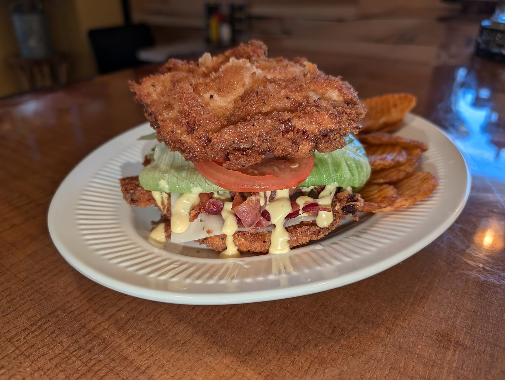

Omelets & breakfast
Made-to-order omelets with toast, scrambled eggs with smoked sausage and cinnamon toast, and homemade sausage gravy.
Diner · Spencer, IN
Crispy bacon, homemade sausage gravy and potatoes that are actually fried.

What we serve
Plates worth writing home about.
Made-to-order omelets with toast, scrambled eggs with smoked sausage and cinnamon toast, and homemade sausage gravy.

BLTs, a towering fried chicken sandwich and hot plates with fries, wedges and dips.

Fresh ground coffee with a loyalty card for regulars, and a sweet finish from the dessert side of the menu.

Guest favorites



4.5 ★ · 132 Google reviews
GUEST CHECK№ 1What a great little local restaurant in Spencer, Indiana! If you're driving near or through, it is absolutely worth the stop. They made their bacon crispy the way it should be. And their sausage gravy was homemade and delicious. The fried potatoes were truly fried, not just warmed up smooshy. It was excellent.
GUEST CHECK№ 2Great homestyle comfort breakfast! We were in town for a mini getaway and found this place. I really enjoyed our sweet server. I got a simple breakfast of scrambled eggs, smoked sausage and cinnamon toast. Everything was so good!! The eggs were cooked perfectly- not rubbery like you sometimes get at diners. The sausage was very flavorful.
GUEST CHECK№ 3Wonderful country atmosphere. Excellent omelletes, great coffee. Plenty of selections. Don't forget to ask for your military discount. Please pay in cash, there's a 3% surcharge for card use.

Since the first pot of coffee
A locally owned diner. Metal Busy Bee letters and a wagon wheel on a plank wall, wood chairs, black booths and menu cards on every table.
Country atmosphere. Friendly servers who help with the menu. A busy crew that keeps moving.
Slide on in
374 IN-46, Spencer, IN 47460
Closed Mondays. Ask about the military discount and the coffee loyalty card.